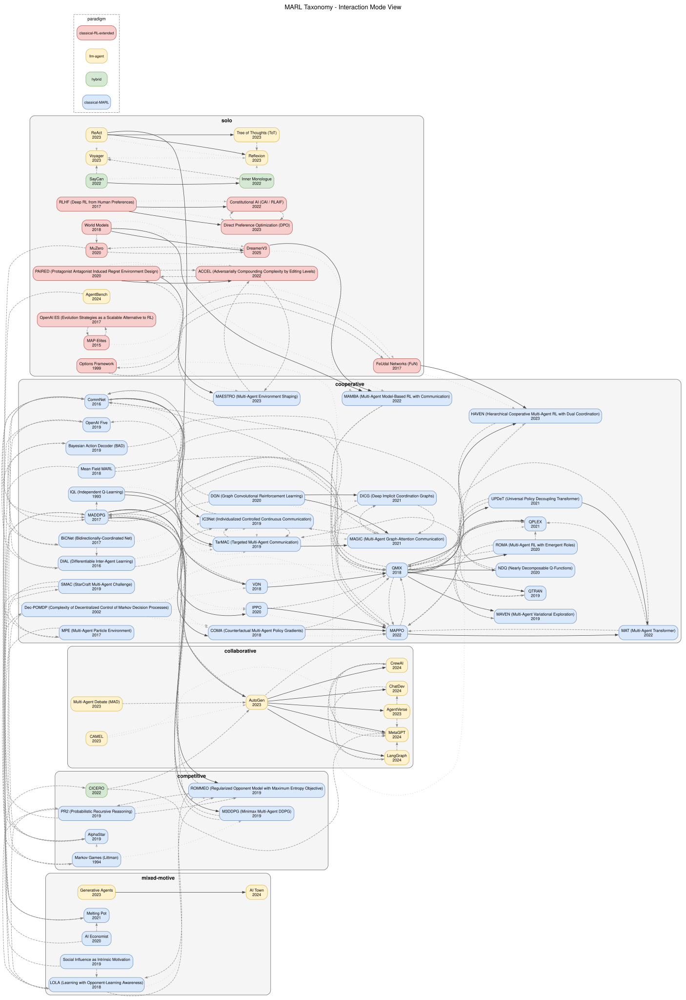
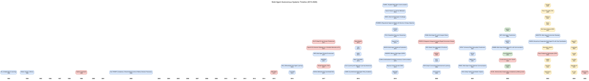
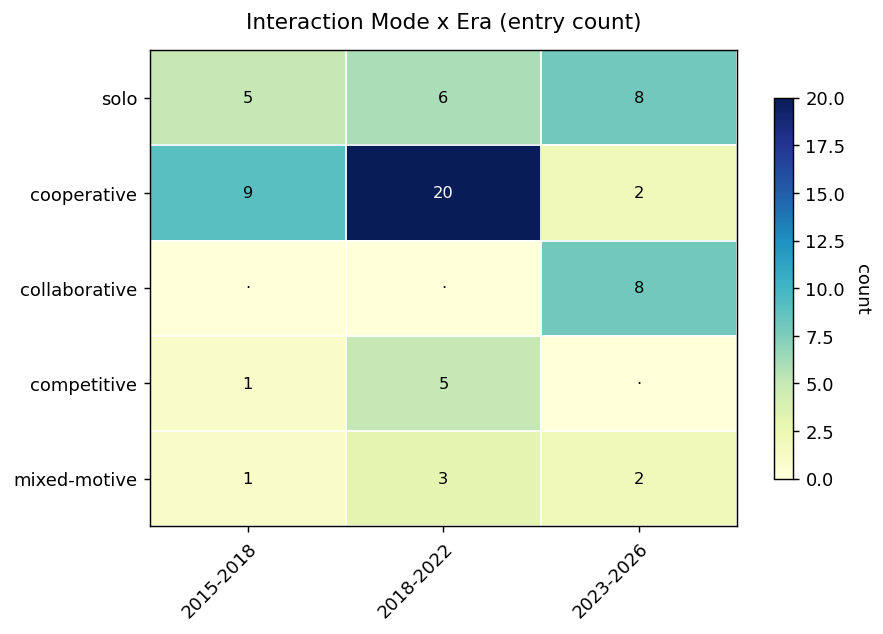
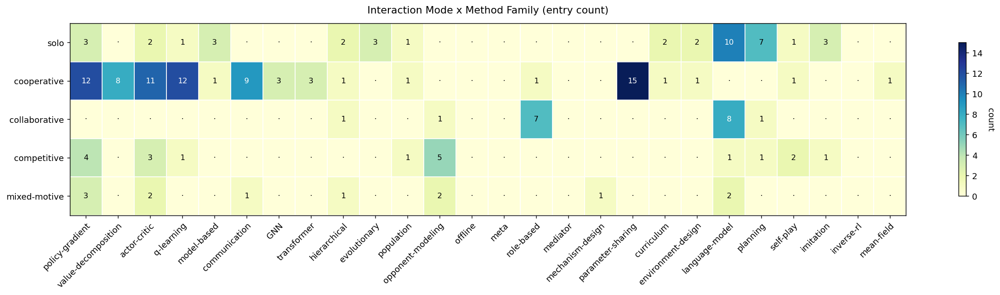
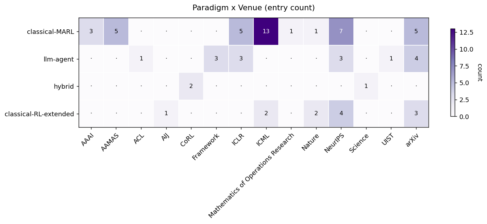

A navigable map of multi-agent autonomous-systems research, 2015–2026 — 70 algorithm / system / framework / benchmark entries and 6 surveys, organized so the absences between classical MARL and the agentic-AI / LLM-agent wave become visible at a glance. Transcribed from the project's generated taxonomy; the full generative YAML source is preserved under assets/sources/marl_taxonomy/.
Most MARL maps sort work by method (value-decomposition, policy-gradient, communication…). This map sorts by interaction mode instead — the relationship between the agents' interests — because that is the axis along which the classical-MARL literature and the 2023–2026 LLM-agent wave fail to meet. Five modes, each with a single distinguishing question:
Each entry carries one primary mode (used for grouping and diagram coloring) plus honest secondary tags on three further axes:
| Axis | Values | What it captures |
|---|---|---|
| Paradigm | classical-MARL · llm-agent · hybrid · classical-RL-extended | Era + research community. classical-MARL is the 2018–2022 deep-MARL wave; llm-agent the 2023–2026 agentic-AI wave; hybrid bridges them; classical-RL-extended is single-agent work with multi-agent applicability. |
| Era | 2015–2018 · 2018–2022 · 2023–2026 | When the line of work landed. The timeline figure below shows the paradigm hand-off. |
| Method family | multi-tag (value-decomposition, policy-gradient, communication, GNN, role-based, language-model, …) | Multi-membership by default — MAPPO is "cooperative + CTDE + policy-gradient + parameter-sharing" all at once. |





Grouped mode → paradigm → era. Each card carries the plain-language description, authors, venue + tier, method / coordination tags, key relationship edges (Extends / Contrasts), and, where notable, the project-relevance note. Venue tiers are abbreviated: T1 tier-1, T2 tier-2, pre preprint, jrnl/bk/fw journal / textbook / framework.
inner-monologue · Inner Monologue2022Embodied LLM-agent that consumes natural-language environment feedback (success detection, scene description, human input) to drive an "inner monologue" that revises plans on the fly; closing the perception–language loop sharply improves long-horizon manipulation/navigation vs. open-loop planners.
Huang, Xia, Xiao, Chan, … Ichter
T2 CoRL
saycan · SayCan2022Grounds an LLM planner in a robot's affordances by combining "Say" (LLM likelihood a skill helps the goal) with "Can" (a learned value function for executability). Foundational hybrid LLM-plus-RL system for embodied long-horizon instruction following.
Ahn, Brohan, Brown, Chebotar, … Zeng
T2 CoRL
react · ReAct2023Interleaves Reasoning and Acting in LLM agents: the model alternates verbal reasoning traces with external tool actions. The foundational pattern of the agentic-AI wave — nearly every later framework (AutoGen, LangGraph, MetaGPT) descends from a ReAct variant.
Yao, Zhao, Yu, Du, Shafran, Narasimhan, Cao
T1 ICLR
reflexion · Reflexion2023Self-reflective agent: after each trial the LLM verbalizes what went wrong and stores the reflection in episodic memory for the next attempt — "RL via verbal feedback" with an in-context rather than gradient-based policy update.
Shinn, Cassano, Berman, Gopinath, Narasimhan, Yao
T1 NeurIPS
tot · Tree of Thoughts2023Frames LLM problem-solving as deliberate search over a tree of partial "thoughts": propose candidate steps, score them, explore by BFS/DFS. Generalizes Chain-of-Thought and ReAct from a linear trace into a search procedure.
Yao, Yu, Zhao, Shafran, Griffiths, Cao, Narasimhan
T1 NeurIPS
voyager · Voyager2023Lifelong-learning LLM agent in Minecraft that builds an ever-growing skill library via iterative prompting (propose, code, execute, reflect) with no gradient updates — open-ended exploration from in-context learning and external memory alone.
Wang, Xie, Jiang, Mandlekar, … Anandkumar
pre arXiv
agentbench · AgentBench2024First systematic evaluation suite for LLM-as-agent across eight environments (OS, databases, knowledge graphs, card games, household, web browse/shop). The standard yardstick for solo-LLM-agent capability; exposed large API vs. open-source gaps.
Liu, Yu, Zhang, Xu, … Tang
T1 ICLR
options-framework · Options Framework1999Foundational formalism for temporally extended actions: an option is (initiation set, intra-option policy, termination); the resulting process is a semi-MDP. Underpins essentially every later hierarchical-RL method.
Sutton, Precup, Singh
jrnl AIJ
map-elites · MAP-Elites2015Quality-diversity algorithm maintaining a grid archive indexed by hand-designed behavior descriptors, keeping the best solution per cell — a diverse repertoire of local optima rather than one global optimum. Foundational for QD and behavior-space curriculum design.
Mouret, Clune
pre arXiv
feudal-net · FeUdal Networks (FuN)2017Hierarchical RL where a high-level Manager emits abstract goals in a learned latent space and a low-level Worker is rewarded for moving along them. Decouples temporal abstraction from action selection; reference for hierarchical cooperative-MARL extensions.
Vezhnevets, Osindero, Schaul, Heess, … Kavukcuoglu
T1 ICML
openai-es · OpenAI ES2017Black-box policy optimization via natural-evolution-strategy gradient estimates from antithetic Gaussian perturbations. Trades sample efficiency for trivial parallelism (one perturbed rollout per worker, a tiny noise-seed broadcast). Reignited evolutionary methods for deep RL.
Salimans, Ho, Chen, Sidor, Sutskever
pre arXiv
rlhf · RLHF (Deep RL from Human Preferences)2017Trains a reward model from pairwise human preference comparisons over trajectory snippets, then optimizes a policy against it with standard deep RL. The upstream root of the entire human-feedback alignment line (InstructGPT, ChatGPT, Constitutional AI, DPO).
Christiano, Leike, Brown, Martic, Legg, Amodei
T1 NeurIPS
world-models · World Models2018Three-part architecture: a VAE compresses observations, a recurrent mixture-density net predicts latent dynamics, and a small linear controller is evolved by CMA-ES inside the learned world. First popular demonstration of training a policy almost entirely "in imagination".
Ha, Schmidhuber
T1 NeurIPS
muzero · MuZero2020Combines a learned value-equivalent dynamics model with MCTS, removing the need for a known simulator at planning time. Matches AlphaZero on Go/chess/shogi and is strong on Atari with one architecture.
Schrittwieser, Antonoglou, Hubert, Simonyan, … Silver
T1 Nature
paired · PAIRED2020Unsupervised environment design: a protagonist and an antagonist play environments produced by an adversary trained to maximize the regret between them, yielding a curriculum at the frontier of the protagonist's ability with minimax-regret guarantees.
Dennis, Jaques, Vinitsky, Bayen, … Levine
T1 NeurIPS
accel · ACCEL2022Unsupervised environment design that drops the adversary network for an evolutionary edit operator: a buffer of high-regret levels is mutated and re-scored, compounding complexity along the agent's frontier. Often matches/beats PAIRED while being simpler.
Parker-Holder, Jiang, Dennis, Samvelyan, … Rocktäschel
T1 ICML
constitutional-ai · Constitutional AI (CAI / RLAIF)2022Aligns an LLM with a written "constitution" using AI feedback instead of human labels: the model critiques and revises its own outputs against the principles, producing preference data for an RLAIF stage. Showed AI-generated preferences can largely replace human ones.
Bai, Kadavath, Kundu, Askell, … Kaplan
pre arXiv
dpo · Direct Preference Optimization2023Reformulates RLHF as a closed-form classification objective on pairwise preferences, eliminating the explicit reward model and the PPO loop. Now the dominant alignment recipe for open-source LLMs.
Rafailov, Sharma, Mitchell, Ermon, Manning, Finn
T1 NeurIPS
dreamerv3 · DreamerV32025Latent-space world model that learns from pixels and trains an actor-critic entirely on imagined trajectories. Masters Minecraft diamonds from scratch with a single fixed hyperparameter set across 150+ tasks — model-based RL that is both general and robust.
Hafner, Pasukonis, Ba, Lillicrap
T1 Nature
iql · IQL (Independent Q-Learning)1993Foundational decentralized MARL: each agent runs independent Q-learning, treating others as environment dynamics. Trivial to scale; pays in non-stationarity and inability to coordinate beyond shared rewards. Still a competitive baseline today.
Ming Tan
T1 ICML
dec-pomdp · Dec-POMDP (complexity)2002Formal complexity anchor for cooperative MARL: defines the decentralized POMDP and proves finite-horizon optimal policies are NEXP-complete — ruling out tractable exact algorithms and explaining why cooperative MARL needs approximate, learning-based methods.
Bernstein, Givan, Immerman, Zilberstein
jrnl Math. Oper. Res.
formalism.tex.commnet · CommNet2016Foundational learned-communication architecture: each agent's hidden state is mean-pooled across all agents and broadcast back as next-layer input — a differentiable broadcast-to-all channel trained end-to-end with policy gradients. Anchors the communication family.
Sukhbaatar, Szlam, Fergus
T1 NeurIPS
dial · DIAL2016First gradient-based learned-communication method: during centralized training agents pass continuous messages with gradients flowing through the channel; at execution messages are discretized (via the DRU). Pioneered differentiable-train / discrete-deploy.
Foerster, Assael, de Freitas, Whiteson
T1 NeurIPS
bicnet · BiCNet2017Models the team policy and Q-function as a bidirectional recurrent network whose hidden states act as an inter-agent channel (StarCraft 1 micro). Shows recurrent message passing captures team coordination, but the imposed ordering breaks permutation invariance.
Peng, Wen, Yang, Yuan, Tang, Long, Wang
pre arXiv
maddpg · MADDPG2017Multi-Agent DDPG: per-agent centralized critics (see all obs+actions at training) with decentralized actors. Established the CTDE paradigm in deep MARL, with cooperative, competitive, and mixed-motive variants on the particle environment.
Lowe, Wu, Tamar, Harb, Abbeel, Mordatch
T1 NeurIPS
formalism.tex; cited throughout the RedWithinBlue RL-taxonomy notes.mpe · MPE (Particle Environment)2017Lightweight 2D continuous-state particle environment introduced with MADDPG — cooperative navigation, predator-prey, speaker-listener, physical deception. The default sandbox for MADDPG, MAAC, M3DDPG, and most early CTDE policy-gradient methods.
Lowe, Wu, Tamar, Harb, Abbeel, Mordatch
T1 NeurIPS
coma · COMA2018Solves multi-agent credit assignment with a counterfactual baseline: the centralized critic estimates how much each agent's specific action contributed beyond a default, giving a stronger cooperative gradient than naive joint-policy gradient.
Foerster, Farquhar, Afouras, Nardelli, Whiteson
T1 AAAI
vdn · VDN2018Earliest deep value-decomposition method: the joint Q-function is the simple sum of per-agent utilities, trivially satisfying Individual-Global-Max. Limited expressiveness vs. QMIX's hypernetwork mixing; the foundational value-decomposition anchor.
Sunehag, Lever, Gruslys, Czarnecki, … Graepel
T1 AAMAS
mean-field-marl · Mean Field MARL2018Approximates the joint action of a large population by the empirical distribution (mean field) of neighbor actions, reducing the Q-function to a pairwise interaction with a population summary. Scales to hundreds–thousands of homogeneous agents.
Yang, Luo, Li, Zhou, Zhang, Wang
T1 ICML
qmix · QMIX2018Factorizes the joint Q as a monotonic mixture of per-agent utilities, enforced by a non-negative-weight hypernetwork, satisfying IGM so per-agent argmax = joint argmax. Strong on discrete-action SMAC; the monotonicity constraint is its key limitation for sacrifice actions.
Rashid, Samvelyan, Schroeder de Witt, Farquhar, Foerster, Whiteson
T1 ICML
bad · Bayesian Action Decoder2019Recasts a cooperative Dec-POMDP with hidden information as a public-belief MDP: agents condition on a Bayesian posterior over private states given public history, sharing an implicit language. Super-human on 2-player Hanabi.
Foerster, Song, Hughes, Burch, … Bowling
T1 ICML
ic3net · IC3Net2019Adds a learned binary gate to CommNet so each agent decides at each step whether to broadcast at all — learning when to communicate matters as much as what. Extends to mixed settings where unconditional broadcast leaks info to opponents.
Singh, Jain, Sukhbaatar
T1 ICLR
maven · MAVEN2019Augments QMIX with a hierarchical latent variable conditioning the joint policy, trained via mutual-information maximization to encourage diverse coordinated exploration — addressing QMIX's exploration weakness on sparse-reward tasks.
Mahajan, Rashid, Samvelyan, Whiteson
T1 NeurIPS
openai-five · OpenAI Five2019Defeated the world-champion Dota 2 team with PPO at unprecedented scale: five parameter-sharing LSTM agents on a cooperative team reward. Scale + self-play reached pro-level play in a 5v5 partially-observable game with no explicit multi-agent algorithm.
OpenAI: Berner, Brockman, Chan, … Zhang
pre arXiv
qtran · QTRAN2019Replaces QMIX's monotonic mixing with a soft regularization of the IGM condition, making the function class strictly broader. Strongest theory in the value-decomposition family but often empirically loses to QMIX/QPLEX because the regularizer is harder to tune.
Son, Kim, Kang, Hostallero, Yi
T1 ICML
smac · SMAC2019Benchmark of cooperative StarCraft II micromanagement (2–27 unit agents, decentralized partial obs, scripted enemy). The de-facto cooperative-MARL benchmark on which QMIX, MAPPO, MAVEN, QPLEX were validated.
Samvelyan, Rashid, Schroeder de Witt, Farquhar, … Whiteson
T1 AAMAS
tarmac · TarMAC2019Replaces CommNet's mean-pool broadcast with signature-based soft attention: agents emit (key, value) pairs, listeners query to weight them — learning who to address and what to send. Established attention as the default learned-communication architecture.
Das, Gervet, Romoff, Batra, … Pineau
T1 ICML
dgn · DGN (Graph Conv RL)2020Treats agents as nodes in a spatial-neighborhood graph and applies multi-head graph-attention to fuse local observations before Q-learning. GNN message passing scales cooperatively to ~100 agents. Anchor of the GNN family in cooperative MARL.
Jiang, Dun, Huang, Lu
T1 ICLR
ippo · IPPO2020Independent PPO with parameter sharing: each agent runs PPO on its own observations and treats others as environment. The key result — IPPO (DTDE) often matches or beats QMIX (CTDE) on SMAC — challenged the field's CTDE-by-default assumption.
Schroeder de Witt, Gupta, Makoviichuk, … Whiteson
pre arXiv
ndq · NDQ2020Combines QMIX value-decomposition with an information-theoretic regularizer minimizing mutual information between sent messages and the sender's full observation while preserving task content — minimal-bandwidth communication only when independent decomposition is insufficient.
Wang, Wang, Zheng, Zhang
T1 ICML
roma · ROMA (Emergent Roles)2020Augments value-decomposition MARL with a stochastic role embedding per agent, regularized to be mutually informative with trajectories yet compact enough to drive specialization. Yields emergent roles without hand-designed priors; pairs with QMIX-style mixing.
Wang, Dong, Lesser, Zhang
T1 ICML
dicg · DICG (Implicit Coordination Graphs)2021Learns an implicit coordination graph end-to-end: an attention module produces a soft adjacency feeding a GNN reasoning layer over joint values/actions. Mitigates relative overgeneralization in predator-prey and competes with QMIX on SMAC without hand-specified structure.
Li, Gupta, Morales, Allen, Kochenderfer
T1 AAMAS
magic · MAGIC2021Combines a Scheduler (when/to-whom to communicate) with a graph-attention Message Processor over a dynamically-learned communication graph — unifying the when/who/what axes that CommNet, IC3Net, TarMAC each addressed separately. Validated on a physical robot-soccer testbed.
Niu, Paleja, Gombolay
T1 AAMAS
qplex · QPLEX2021Duplex dueling decomposition with multi-head attention over agents, generalizing QMIX's monotonic mixing to non-monotonic interactions while still satisfying IGM. Outperforms QMIX and QTRAN on hard SMAC scenarios needing sacrifice actions.
Wang, Ren, Liu, Yu, Zhang
T1 ICML
updet · UPDeT2021Replaces the per-agent recurrent encoder with an entity-based transformer: each agent attends over a variable-length set of observed entities, and the policy head decouples into action groups. A single policy transfers across team sizes — universal in N.
Hu, Zhu, Chang, Liang
T1 ICLR
mamba · MAMBA2022Multi-agent latent world-model (Dreamer family): agents jointly maintain a shared latent state via learned communication and train policies on imagined rollouts. Model-based imagination matches/exceeds model-free CTDE at lower sample budgets.
Egorov, Shpilman
pre arXiv
mappo · MAPPO2022CTDE variant of PPO: a centralized value uses global state, decentralized actors use per-agent obs, agents share parameters. Empirically the strongest cooperative-MARL baseline on SMAC/MPE/Hanabi as of 2022, despite the field's earlier off-policy preference.
Yu, Velu, Vinitsky, Wang, Bayen, Wu
T1 NeurIPS
mat · MAT (Multi-Agent Transformer)2022Recasts cooperative MARL as sequence modeling: an encoder-decoder transformer encodes the joint observation and decodes agent actions one at a time, using the multi-agent advantage decomposition theorem for monotonic improvement. Beats MAPPO, QMIX, HAPPO on SMAC/MA-MuJoCo.
Wen, Kuba, Lin, Zhang, Wen, Wang, Yang
T1 NeurIPS
haven · HAVEN2023Hierarchical cooperative MARL with dual coordination at both the high level (across subgoal selections) and low level (across primitive actions), combined with QMIX-style value decomposition. Improves on flat CTDE on long-horizon SMAC tasks.
Xu, Bai, Zhang, Li, Fan
T1 AAAI
maestro · MAESTRO2023Multi-agent extension of PAIRED: jointly co-evolves a population of co-players and a curriculum of environments to maximize regret in cooperative MARL. Targets the failure where environment design ignores the partner-policy distribution; partner-aware curricula generalize better.
Samvelyan, Khan, Dennis, Jiang, … Rocktäschel
T1 ICLR
agentverse · AgentVerse2023Structures problem-solving into four phases — expert recruitment, collaborative decision-making, action execution, evaluation — dynamically assembling a team of role-tagged LLM agents with reflection. Explicit phase decomposition can beat free-form group chat.
Chen, Su, Zuo, Yang, … Zhou
pre arXiv
autogen · AutoGen2023Microsoft's framework for multi-agent LLM apps: agents with roles (UserProxy, AssistantAgent, GroupChatManager) exchange natural-language messages to solve a user task, collaborating temporarily and dissolving afterward — quintessentially collaborative, with each role's reward implicit in its prompt.
Wu, Bansal, Zhang, Wu, … Wang
pre arXiv
camel · CAMEL2023Two-agent role-playing framework: an "AI user" and an "AI assistant" get complementary roles via "inception prompting" and exchange messages to solve a task. One of the earliest multi-agent LLM frameworks (March 2023); seeded AutoGen and MetaGPT.
Li, Hammoud, Itani, Khizbullin, Ghanem
T1 NeurIPS
multi-agent-debate · Multi-Agent Debate2023Multiple LLM agents propose, critique, and refine each other's answers across structured debate rounds, improving factual accuracy and reasoning beyond single-agent baselines. Competitive-form mechanism producing a collaborative outcome — borderline mixed-motive in form.
Liang, He, Jiao, Wang, … Shi
pre arXiv
chatdev · ChatDev2024LLM-agent virtual software company with role-based agents communicating via structured chat. Distinguishes itself from MetaGPT through explicit "double-agent" debate phases at each stage (designer ↔ reviewer). Strong collaborative role-based coordination.
Qian, Liu, Liu, Chen, … Sun
T2 ACL
crewai · CrewAI2024Open-source Python framework orchestrating role-playing LLM agents as a "crew" — each with role, goal, backstory, tools — distributing tasks sequentially or hierarchically. A lightweight production-oriented alternative to AutoGen with explicit role abstractions.
João Moura
fw Framework
langgraph · LangGraph2024LangChain library for stateful multi-agent LLM workflows as explicit directed graphs with shared state: nodes are LLM agents or tool calls, edges are conditional transitions, persistent state enables long-horizon coordination and human-in-the-loop checkpoints.
LangChain Inc
fw Framework
metagpt · MetaGPT2024Software-development LLM-agent system encoding human SOPs: a Product Manager writes requirements, an Architect designs, Engineers implement, QA tests. Hand-designed workflows ("meta-programming via prompts") beat free-form multi-agent conversation on structured tasks.
Hong, Zhuge, Chen, Zheng, … Schmidhuber
T1 ICLR
markov-games · Markov Games (Littman)1994Introduces Markov (stochastic) games as the formalism for competitive MARL and proposes minimax-Q, a value-iteration variant that converges in two-player zero-sum games. The standard ancestor citation for self-play and minimax-RL.
Michael L. Littman
T1 ICML
formalism.tex; minimax-Q is the conceptual ancestor of M3DDPG.alphastar · AlphaStar2019Grandmaster-level StarCraft II from DeepMind via population-based self-play with a "league" of main agents, main exploiters, and league exploiters to prevent strategy cycles. Influential for the population-of-policies family.
Vinyals, Babuschkin, Czarnecki, Mathieu, … Silver
T1 Nature
m3ddpg · M3DDPG2019Robust adversarial extension of MADDPG: trains each agent's policy against an adversarially perturbed approximation of the others as a minimax objective on the centralized critic (one-step linearized inner gradient). Improves robustness to adversarial co-players.
Li, Wu, Cui, Dong, Fang, Russell
T1 AAAI
pr2 · PR2 (Recursive Reasoning)2019Models multi-agent decisions as recursive level-K reasoning where each agent assumes opponents reason one level shallower; uses variational inference to approximate the joint policy. Anchor for the Bayesian / cognitive-hierarchy branch of opponent modeling.
Wen, Yang, Luo, Wang, Pan
T1 ICLR
rommeo · ROMMEO2019Builds an opponent model jointly with each agent's policy under a maximum-entropy objective, then regularizes the policy update against the inferred opponent posterior — a Bayes-optimal best-response under co-player uncertainty in general-sum and competitive games.
Tian, Wen, Gong, Punakkath, Zou, Wang
T1 ICML
cicero · CICERO2022Meta AI's human-level Diplomacy player: a planning module trained via no-press self-play plus a dialogue model fine-tuned on human games and conditioned on intended actions. Human-level competitive multi-agent natural-language negotiation.
Meta FAIR Diplomacy Team
T1 Science
lola · LOLA2018Differentiates each agent's update through a one-step lookahead on the opponent's learning step, so policies are shaped by how they influence the opponent's future gradient. Yields tit-for-tat cooperation in iterated prisoner's dilemma where naive learners defect.
Foerster, Chen, Al-Shedivat, Whiteson, Abbeel, Mordatch
T1 AAMAS
social-influence · Social Influence2019Adds an intrinsic reward proportional to one agent's causal influence on another's policy (KL between conditional and marginal action distributions) to encourage emergent communication and prosocial behavior in Cleanup/Harvest social dilemmas without explicit channels.
Jaques, Lazaridou, Hughes, Gulcehre, … de Freitas
T1 ICML
ai-economist · AI Economist2020Two-level RL where a "social planner" agent designs tax policy while heterogeneous worker agents simultaneously learn to respond (PPO at both levels), discovering tax schedules that improve equality-vs-productivity trade-offs. Anchor for RL-based mechanism design.
Zheng, Trott, Srinivasa, Parkes, Socher
pre arXiv
melting-pot · Melting Pot2021DeepMind benchmark of MARL environments around social dilemmas, free-rider problems, and common-pool resources. The most prominent infrastructure for studying generalization across cooperative ↔ competitive ↔ mixed-motive within one framework.
Leibo, Duéñez-Guzmán, Vezhnevets, Agapiou, … Graepel
T1 ICML
generative-agents · Generative Agents202325 LLM-driven agents in a sandbox town (Smallville) show believable individual and social behavior via a memory stream, reflection, and planning — emergent information spread, relationship formation, event coordination. Anchor for emergent-society simulation.
Park, O'Brien, Cai, Morris, Liang, Bernstein
T2 UIST
ai-town · AI Town2024Open-source deployable virtual town inspired by Generative Agents: LLM-driven characters live, plan, gossip, and form relationships in a Convex-backed real-time world. A practical template for persistent multi-agent LLM societies, widely forked.
a16z Infra
fw Framework
70 entries rendered by primary mode — solo 19 (hybrid 2, llm-agent 5, classical-RL-extended 12), cooperative 31, collaborative 8, competitive 6, mixed-motive 6. Secondary modes (the "also:" tags) place several entries in more than one mode at once.
3 · the field's self-imageSurveys are treated as first-class nodes: they define the field's self-image at a moment in time. Each card lists what the survey covers, what it explicitly omits, and how many pool entries it cites. The omissions, cross-checked against the entry pool, drive the gap report below.
albrecht-christianos-schaefer-2024Most recent comprehensive textbook treatment of cooperative and competitive MARL. Strong on theory (Markov games, POSG, Nash, Bellman equations) and modern deep-MARL benchmarks; mostly excludes the LLM-agent wave and applied / mission-level work.
Albrecht, Christianos, Schäfer · MIT Press (textbook)
oroojlooyjadid-hajinezhad-2023Cooperative-MARL-only survey organized by communication, coordination, training paradigm, and applications. Useful for the cooperative-only literature; a conspicuous gap on competitive and mixed-motive.
OroojlooyJadid, Hajinezhad · Applied Intelligence (survey)
du-ding-2023Survey focused specifically on learned communication in MARL: protocols (broadcast, targeted, attention), representations (continuous, discrete, symbolic), and learning algorithms. Useful for the communication-learning cluster.
Zhai, Ding · arXiv (survey)
gronauer-diepold-2022Broad survey of deep MARL up to 2022, organized by training paradigm (centralized / decentralized / fully / partially observable). Predates the LLM-agent wave; useful as a "what classical MARL covered" reference for triangulating gaps.
Gronauer, Diepold · AI Review (survey)
zhang-yang-basar-2021Theory-leaning selective survey emphasizing convergence guarantees, Markov games, and game-theoretic foundations. Contrasts cooperative, competitive, and mixed settings via formal analysis; light on emerging deep-MARL empirical work.
Zhang, Yang, Başar · Handbook of RL & Control (survey)
hernandez-leal-2019Influential 2019 critique categorizing work into four open problems: emergent behaviors, learning communication, learning cooperation, agents modeling agents. A critical view that helps identify gaps — highlighting how thin coverage of communication and opponent modeling was at the time.
Hernandez-Leal, Kartal, Taylor · JAAMAS (survey)
The build pipeline auto-ranks every (mode, method-family) cell by an interest score: a cell is interesting if it is sparse (few entries) AND its neighbors are dense. Absences neighboring populated cells are more likely structural — opportunities for new work — than absences in already-empty regions.
| # | Mode | Method family | Cell | Max nbr | Score |
|---|---|---|---|---|---|
| 1 | collaborative | curriculum | 0 | 15 | 16.00 |
| 2 | collaborative | parameter-sharing | 0 | 15 | 16.00 |
| 3 | collaborative | mechanism-design | 0 | 15 | 16.00 |
| 4 | cooperative | mechanism-design | 0 | 15 | 16.00 |
| 5 | solo | parameter-sharing | 0 | 15 | 16.00 |
| 6 | solo | mechanism-design | 0 | 15 | 16.00 |
| 7 | collaborative | model-based | 0 | 12 | 13.00 |
| 8 | collaborative | q-learning | 0 | 12 | 13.00 |
| 9 | collaborative | actor-critic | 0 | 12 | 13.00 |
| 10 | collaborative | value-decomposition | 0 | 12 | 13.00 |
| 11 | collaborative | policy-gradient | 0 | 12 | 13.00 |
| 13 | cooperative | planning | 0 | 10 | 11.00 |
| 14 | cooperative | language-model | 0 | 10 | 11.00 |
| 15–16 | collaborative | GNN / communication | 0 | 9 | 10.00 |
Cross-checking each survey's omits field against the entry pool surfaces concepts that are present in the literature but absent from the canonical surveys:
llm-agent and mission-level-success are omitted by all 6 surveys. role-asymmetry is omitted by nearly all (5 of 6). foundation-model-agents by 5; real-world-deployment by 4. The field's own self-image has no place for the agentic-AI wave, for whether a mission actually succeeds, or for role-differentiated teams.mission-level-success + role-asymmetry + the post-classical llm-agent/agentic regime) that every canonical survey leaves out. The gap the map measures and the gap the program targets are the same gap. See Literature for the five-flank review and the White Paper for the formal statement.When the gap report flags an empty cell, it surfaces the adjacent disciplines tagged on the neighboring entries — out-of-the-box ideas that may apply. The connectors catalogue defines, for each field, the canonical methods that have crossed (or could cross) into MARL:
No-regret learning → self-play convergence; mechanism design → mediator-induced cooperation; Stackelberg → leader-follower MARL.
Robust H∞ for adversarial perturbations; consensus algorithms as networked-MARL precursors; MPC as a model-based planning baseline.
Minimum-information communication (NDQ); information-bottleneck regularization for compositional policies.
Byzantine-robust federated MARL; distributed Kalman filtering as a sensor-fusion precursor.
Spectral analysis of communication topologies; random-graph models for ad-hoc team formation.
Robust MARL under action / observation / communication / reward attacks; certified MARL policies.
Shielded MARL for mission-level safety guarantees; constrained CTDE with cost critics.
Mediator-induced cooperation in social dilemmas; shared-reward design for collaborative LLM-agent teams.
Natural language as the coordination channel (AutoGen, CrewAI); RLHF as single-agent RL with a human partner.
OpenAI ES as MARL hyperparameter search; MAP-Elites for diverse behavior repertoires; PBT for self-play.
Mean-field MARL for very large N; phase transitions in cooperation under partial information.
Theory-of-mind-augmented opponent modeling; level-K reasoning for cognitive-hierarchy MARL.
Behavior taxonomies (Brambilla, Schranz) as a macro-objective vocabulary; kilobot-style local rules as DTDE baselines.
Auction-based task allocation; negotiation as MARL in LLM settings; voting/aggregation in multi-agent debate; fair credit assignment.
"Build a navigable map of multi-agent autonomous-systems research that makes gaps and adjacencies visible, rather than an encyclopedic listing."
omits against the pool to flag concepts present in the literature but absent from the field's self-image.data/entries/*.yaml, data/surveys/*.yaml, venues.yaml, adjacencies.yaml), pydantic-validated, and rendered to README + Graphviz diagrams + matplotlib matrices + the gap and venue reports. The README is never hand-edited.assets/sources/marl_taxonomy/, alongside the rendered gaps.md and venues.md reports this page draws from.